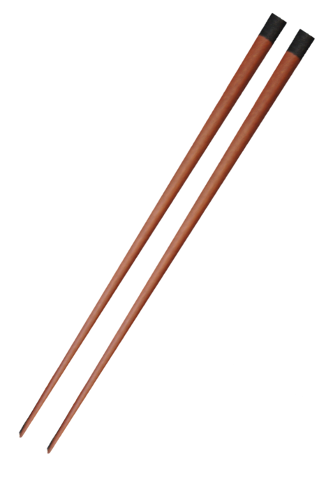

Japanese
JAPANESE
CHOPSTICKS

Came from the origins in China
The first Japanese chopsticks were made around 500 ad
Smaller at the tips
Used mainly to eat seafood (Highly meticulous for bones and skins)